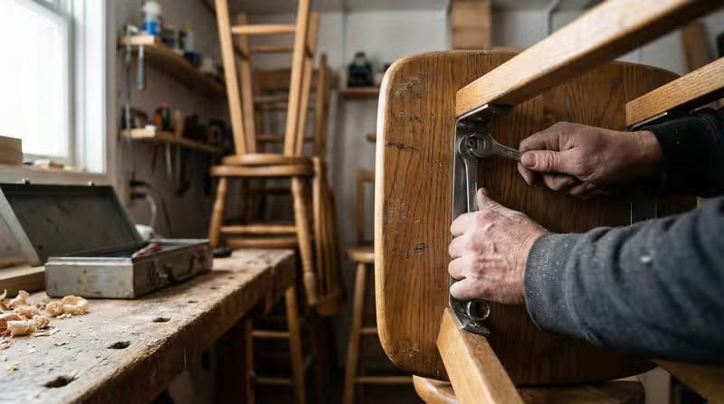
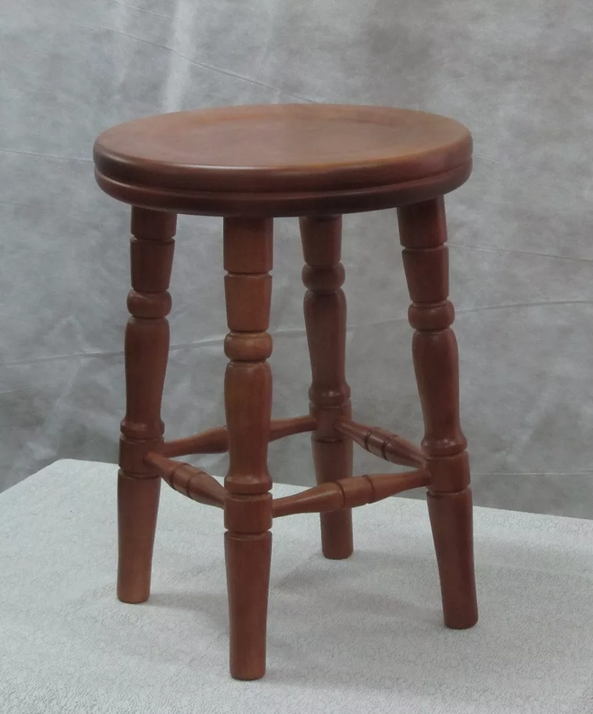
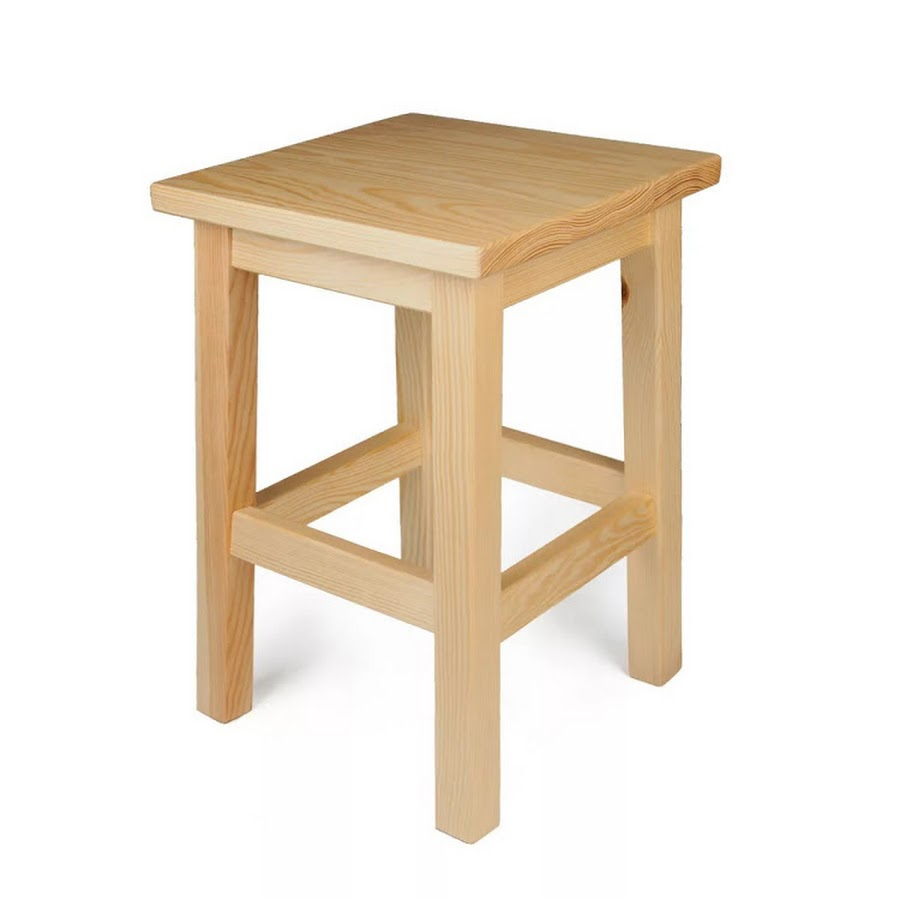
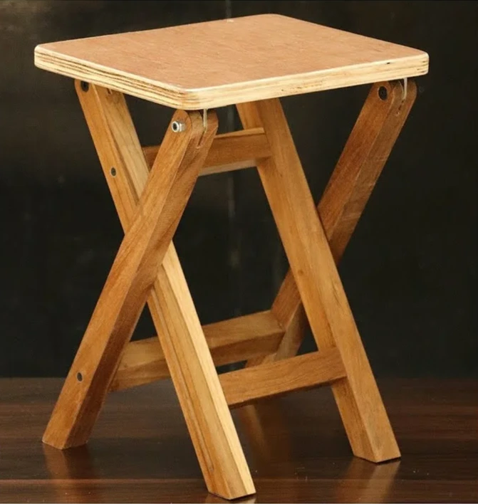
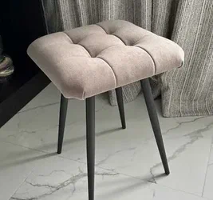
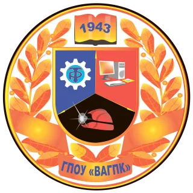

Разметка и раскрой
Сиденье выпиливают из щита, ножки — из бруска 40 × 40 мм с припуском на токарную обработку.
Справочный проект
Всё о самом простом предмете мебели: интерактивная 3D-модель, разбор конструкции с размерами, сравнение пород древесины и историческая хронология — для дизайнеров, мастеров и всех, кто интересуется мебелью.

Классика
Круглое сиденье, четыре ножки с наклоном 8 градусов и четыре проножки на высоте 14 см.
Трёхмерная графика недоступна в этом браузере.
Потяните, чтобы повернуть
Конструкция
Классическая табуретка собирается без единого металлического крепежа: сиденье, четыре ножки и четыре проножки держатся на клею и нагелях.
| Деталь | Размер | Кол-во | Заготовка |
|---|---|---|---|
| Сиденье | 380 × 40 мм | 1 | Щит из массива |
| Ножка | 34 → 26 × 410 мм | 4 | Брусок |
| Проножка | 18 × 300 мм | 4 | Круглый брусок |
| Нагель | 8 × 60 мм | 8 | Берёза, бук |
| Клей | ПВА D3 | — | Водостойкий |

Сиденье выпиливают из щита, ножки — из бруска 40 × 40 мм с припуском на токарную обработку.
В сиденье сверлят четыре гнезда глубиной 25 мм. Угол наклона задаёт кондуктор или наклонный столик сверлильного станка.
Каркас собирают без клея и проверяют диагонали: расхождение больше 2 мм — табурет будет шататься.
Клей наносят на гнездо и шип, после схватывания ставят нагели, лишнее срезают, изделие шлифуют и покрывают маслом.
Материалы
Табурет работает на сжатие и на изгиб одновременно: ножки — на сжатие, проножки — на изгиб. Поэтому важна не только твёрдость, но и упругость.
Твёрдость по Бринеллю · плотность
700 кг/м³
Максимальный ресурс: табурет переживёт несколько ремонтов. Тяжёлый и дорогой материал, требует острого инструмента.
690 кг/м³
Прочнее дуба на изгиб, светлее по тону и хорошо гнётся после пропарки. Любимая порода для гнутой мебели.
640 кг/м³
Компромисс цены и прочности. Легко шлифуется и точится, но боится сырости — нужна надёжная защита маслом.
500 кг/м³
Самый лёгкий и доступный вариант. Мягкая древесина требует более массивных ножек и аккуратной затяжки соединений.
Начните с сосны: она дешевле и мягче, ошибки разметки не так обидно. Когда соединения начнут получаться — переходите на дуб или ясень. Фанера и плитные материалы для ножек не годятся: слоистый материал плохо держит нагель на изгибе.
История
Табурет старше стула: сначала это была привилегия, потом — рабочий инструмент, а в XX веке — полигон для промышленного дизайна.
III тыс. до н. э.
Самые ранние табуреты находят в египетских гробницах. Четырёхногие, с плетёным сиденьем, они были привилегией знати и жрецов.
V–IV вв. до н. э.
В Греции появляется дифрос — лёгкий табурет с точёными ножками. Складная версия стала походным предметом, который носили за собой.
Средние века
В Европе табурет делали из цельного куска дерева: толстая доска и три вставные ножки. Стул как тип мебели ещё редкость.
XVII–XVIII вв.
Появляются проножки, точёные ножки и резные сиденья. Табурет становится учебной работой подмастерья — проверкой точности соединений.
1930-е
Финский архитектор придумывает L-образную ножку из гнутой берёзы. Каркас табурета превращается в промышленное изделие без шипов.
1950-е
Арне Якобсен делает ставку на фанеру и три опоры. Массовое производство окончательно превращает табурет в предмет повседневного дизайна.
Сегодня
Табурет живёт в двух мирах: ручная работа по традиционной технологии и раскрой на станке по цифровой модели.
Вариации
Меняются форма сиденья, схема каркаса и материалы обивки — принцип остаётся тем же: три-четыре опоры и жёсткая связка между ними.

Круглое сиденье, наклонные ножки, четыре проножки. Самый устойчивый вариант для кухни и мастерской.

Прямые ножки и царги вместо проножек. Проще в разметке, удобно ставить вплотную к стене.

Перекрещенные ножки на металлической оси. Складывается в толщину нескольких сантиметров.

Фанера, поролон и обивка тканью. Для рабочих мест, где сидят подолгу и нужна мягкая посадка.
Вопросы
Короткие ответы на то, что чаще всего спрашивают мастера и дизайнеры при первой сборке.
Перейти к конструкцииОб учебном проекте
Данный сайт — учебный проект по специальности 09.02.07 «Информационные системы и программирование». 3D-модель табуретки, интерактивная сцена на Three.js и вёрстка выполнены самостоятельно.

ГПОУ «Воркутинский арктический горно-политехнический колледж»
г. Воркута, Республика Коми
Перечень по ФГОС СПО для специальности 09.02.07.
Учебный процесс и работа студентов на специальности 09.02.07.